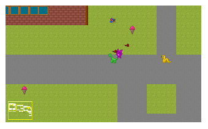

I've worked locally as a software and web developer since I graduated from UMKC in 2009. I've worked with C++, C#, ASP.NET, Python, Django, HTML, CSS, JS, and MySQL professionally.
I currently teach full time at JCCC and run my own software startup. We make apps.

I do a lot of programming in my spare time, ever since I was 12. Mostly game development.
When trying to not sit on the computer all day, I study human languages and do crafts.
I'm fluent in Esperanto, I've taken a class at KU Edwards in Mandarin Chinese, and I'm currently learning Hindi.
Discrete Mathematics: Mathematical Reasoning and Proof with Puzzles, Patterns, and Games (1st edition)
Author: Douglas E. Ensley, J. Winston Crawley
Publisher: Wiley, 2006
ISBN-13: 978-0471763802
Graphing calculators are not allowed.
You can use other types of calculators on tests, which have functions like square root, exponents, etc.
During class, short lectures and working
of example problems will be done by the instructor.
Longer, more in-depth lectures are available in
video form, for you to watch at home to help
clarify the book reading and to review.
The primary use of the class period will be on
working through math problems in teams.
The in-class exercises are built to introduce you
to the new topics a step at a time. Work with your
team to solve the problems, and turn in one set
per team. All members of the team will receive the same
score on the exercise.
Homework problems will be assigned out of the book. However, instead of turning in on-paper homework for grading, you will submit your answers via a D2L quiz. This way, you will immediately get your results and feedback.
Some homework assignments may pull questions from the book
which have the solutions in the back of the textbook.
These quizzes will have no limit on times you can retake them.
Other homework assignments will be from the other textbook problems,
which do not have the solution in the back. For these,
the amount of retakes you will be able to do is restricted.
After we've covered each sub-section in a section, we will have an exam over those topics. These are generally on-paper. Graphing calculators are not allowed.
Communication is important in this class, but it also goes both ways.
Emailing - I generally try to respond to emails and texts as soon as possible. If, for some reason, I'm not responding to your emails - there is something wrong! Please try to contact me by an alternative method (Instructor & Office Hours). Also make sure that you're sending me messages through D2L's email - go to Classlist, select Instructors, and click my name to send me an email. This way, the email will be marked with the class title, and we can track it better if it gets lost.
Office Hours - You're welcome to come to my office hours any time; that is what they're there for. Come in with questions about assignments, the class, grades, the software industry, whatever.
Is something wrong? - If you have a problem with the class, you need to let me know. I am trying my best, but I am not always aware of problems that students face. If there is something that I'm doing, or a classmate is doing, that is impeding your success in the class, you need to speak up early (NOT at the end of the semester!)
If you're experiencing stress, anxiety, depression, or just generally having trouble managing everything, also let me know, and think about going to Student Services to work with them on getting accommodations for the class.
If you're going to be absent for an extended period of time, you need to get in touch with me. I do not auto-drop students from my courses, so if you fall off the face of the earth and don't turn in your work, you will receive an F - not a W.
I am pretty flexible about absences, since I post lectures and course content on D2L. But if you intend to keep up with the class, but cannot make it to class, please check in.
With assignments that I grade, the assignments are closed after a week. If you need an extension, please let me know before the assignment has closed. You have a week's grace period to turn in your late work, with some deduction in maximum possible points for each day after the due date - still, 50 - 90% is worth A LOT more than a 0%. A zero will affect your grade a lot more than a D.
There are many resources available to you, when it comes to learning the content. JCCC has tutors, I have office hours, there are YouTube tutorials and written guides online for various computer science topics.
Sometimes tackling a tricky topic means that you have to put in extra work. Practice is usually the best way to gain fluency with a topic - try to do exercises from the textbook, or find practice problems online.
If you're really stuck, let me know - sometimes there are weird errors from small things that you might not notice (for example, not having #include <string> at the top of a C++ program using strings will not give you a useful error message!).
Also remember that for every compiler error you receive - someone has already gotten that error. Do a search online for the error message to get help with getting your program to build.
Every programming assignment has a rubric.
Once you receive a grade on an assignment, make sure to look at it in D2L to view the feedback. With programming assignments, I attach the rubric and comments to the assignment.
This can be helpful to understand why you received the score that you did, and how you can improve next time.
These are my objectives, as your instructor:
These are the expectations I have of my students:
I will specify rules for each assignment type. If something is meant to be a solo effort, I will be checking your work against your classmates', and other code on the internet. If I find an instance of copying, all involved will receive 0% on their assignment. Additionally, it is JCCC's policy that any instance of cheating is reported to the dean of Student Services, and could eventually result in expulsion.
If you need help with an assignment, there are plenty of resources. If you need some extra time on your work, let me know. You're not going to learn the material unless you work on it yourself!
| Week | Date range | Topics | Notes |
|---|---|---|---|
| 1 | Week of August 20 | Chapter 1.1, 1.2 | |
| 2 | Week of August 27 | Chapter 1.3, 1.4 | August 28 Last day to drop with 100% refund |
| 3 | Week of September 3 | Chapter 1.4, 1.5 | September 4 No class, Labor Day |
| 4 | Week of September 10 | Exam 1 | |
| 5 | Week of September 17 | Chapter 3.1, 3.2 | September 18 Last day to drop without "W" |
| 6 | Week of September 24 | Chapter 3.3, 3.4 | |
| 7 | Week of October 1 | Chapter 3.5 | |
| 8 | Week of October 8 | Exam 2 | |
| 9 | Week of October 15 | Chapter 4.1, 4.2 | |
| 10 | Week of October 22 | Chapter 4.3, 4.4 | |
| 11 | Week of October 29 | Chapter 4.5, 4.6 | |
| 12 | Week of November 5 | Exam 3 | |
| 13 | Week of November 12 | Chapter 2.1, 2.2 | November 15 Last day to drop with "W" |
| 14 | Week of November 19 | Lazy day? | November 22nd / 23rd / 24th No class, Thanksgiving Holiday |
| 15 | Week of November 26 | Chapter 2.3, 2.4 | |
| 16 | Week of December 3 | Chapter 2.5, 2.6 | |
| 17 | Week of December 10 | Chapter 1.1, 1.2 | Final exams |
(From http://www.jccc.edu/academics/distance-learning/tips-for-success.html )
1. Time Management.
(From http://www.jccc.edu/student-resources/counseling/academic/time-management.html )
Keep a monthly schedule.Make a weekly schedule.
- On the monthly schedule, list the things you know are coming up.
- By listing at the beginning of the semester when future assignments, tests and projects are due, you can periodically glance ahead and be sure you allow enough time to complete these.
- Be sure to list on your monthly schedule, any events of a personal nature in which you will be involved. This helps you avoid getting caught up in choosing between school commitments and personal commitments.
Prioritize your activities.
- On the weekly time charts, put in all your fixed commitments for the week.
- Schedule in your study time.
- Put in meal times, including meal preparation.
- Be sure to schedule in time for leisure activities and relaxation.
- Schedule your sleep time.
- On the Daily Activity Guide, divide your activities into three categories.
- Category A is the things you must do.
- Category B is the things you should do.
- Category C is the things you could do.
- At the end of the day, check yourself to see how well you did.
Time Wise Tips
- Use small pockets of time. Carry a book and a notepad with you. When you are waiting in line or waiting for an appointment, use this time to read a few pages or to jot down ideas, etc.
- Tackle the hard things first. The way you feel after getting the hard things done can give momentum to your day. You will feel like a weight has been lifted from your shoulders when the hard things are completed.
- Identify your best time and use it well. If you are a morning person, schedule this time to do the hardest tasks or to study and ready the most important things.
- Start projects as soon as they are assigned. Getting started is often the most difficult part of an assignment or project. One of the most common reasons for D papers is the fact that they were written the night before they were due. Assignments always seem to pile up. A little work on a report every week will allow you time to add quality to your work and also keep you from being stressed at the last minute.
- Keep to-do lists. Keep a notebook in your purse or pockets or keep Post-It notes in your car, in your briefcase, in your kitchen, etc. When you think of something you need to do or pick up at the store or something you want to remember, you can jot it down as a reminder before you forget.
- Divide tasks into small, manageable chunks. When things pile up or a task seems overwhelming, breaking it down into smaller parts helps make it manageable and gives you more incentive to begin the small steps toward your goal. For example, most papers have at least five stages — picking a topic, researching the topic, reading and taking notes on articles, organizing the information and writing the paper. Setting a time frame in which to accomplish each step makes the paper seem less overwhelming.
- Take time to take care of yourself. Give yourself a reward for doing a particularly difficult task or assignment or simply for taking the first steps toward a goal. Rewards can be simple, a hot bath, a cup of tea, coffee with a friend, a walk in the park, a good movie or an ice cream sundae. If you don't take care of yourself, you'll run out of steam sooner or later, or you'll find yourself getting sick or out of sorts or losing your enthusiasm. You are worth rewarding!
(From http://www.jccc.edu/student-resources/counseling/personal/test-anxiety.html )
What is Test Anxiety?
Feeling anxious at test time is very common among college students. Most students experience some level of stress when anticipating or taking an exam. A little nervousness can actually help motivate you, but if the stress becomes too intense, it can affect your concentration and exam performance. It's called test anxiety.
Test anxiety may be part of a general anxiety disorder, but it can also be specific only to a testing situation. Either way, some students, even though adequately prepared for an exam, may experience the following symptoms:
- Physical — headaches, nausea or diarrhea, feeling light headed or faint, being too hot or cold, rapid heartbeat, excessive sweating, dry mouth
- Emotional — excessive feelings of fear, disappointment, anger or depression, uncontrollable crying or laughing, feelings of irritability or helplessness
- Behavioral — fidgeting, pacing, substance abuse, avoidance
- Cognitive — racing thoughts, "going blank," difficulty concentrating, negative self-talk, feelings of dread, comparing oneself to others, difficulty organizing thoughts
All anxiety is a reaction to anticipating something stressful. Like other types of anxiety, test anxiety affects both the body and mind. Test anxiety is a type of performance anxiety, a feeling you might have in a situation where performance really counts or when the pressure is on to do well.
If your self-esteem is too closely tied to the outcome of any one test or grade, the results can be devastating. In this situation, you might find yourself spending more time focusing on the possible negative consequences to NOT doing well than you are in preparing to succeed.
Test anxiety can become a vicious cycle. The more you feel anxious about performance, worry about not living up to your own or your parents' expectations or focus on the bad things that could happen, the greater the possibility that you will not perform well on an exam.
Methods to Help Reduce Test Anxiety
Preparing for the Exam
- Attend class regularly and complete all of the assignments in a timely manner.
- Make and take practice tests.
- Study well in advance of the exam and AVOID CRAMMING.
- Use good study habits. Consider taking a class on time management and study skills.
- Don't overplay the importance of a grade. Your grade in a class is not an overall reflection of your self-worth.
- Replace negative thoughts such as "I'm going to fail" with "I've studied hard, and I know this material. I'll do the best I can."
- Reward yourself after the test. Spend time with friends, go to a movie, etc.
- Exercise regularly.
- Get plenty of rest the night before the exam.
- Eat healthy and avoid foods high in fat or sugar. Avoid too much caffeine.
- Try to do something relaxing the hour immediately before the test.
- Arrive at the test location early and calm yourself before you get the exam in your hands.
- Select a seat located away from doors, windows or other distractions during the test.
During the Exam
- When the test is passed out, review the entire test and read the directions TWICE.
- Organize and budget your time during the test (work on the easiest portions of the test first).
- If you "go blank," skip the question and go on, marking it to come back to later.
- Don't rush through the test. Wear a watch and check it frequently so you know how much time you have left to finish as much as you can.
- Don't panic when other students start handing in their exams.
- If you find that you won't be able to finish the whole test, concentrate on those portions you can answer well.
- Recheck your answers if you have extra time and only if you're not feeling anxious.
After the Exam
- Don't dwell on the mistakes you've made.
- Be sure to follow through on the reward you set up for yourself for getting through the test.
- List what strategies worked for you and what things you still need to work on. Continue practicing these anxiety-reducing strategies until you become a pro at them.
- When the exam is returned, review it carefully. If you don't understand what you didn't do well, make an appointment to talk with your instructor about it.
- If you want to discuss your particular situation with test anxiety, see a JCCC counselor.
Hints for Specific Types of Test Questions
Essay Questions
- Construct a short outline of your answer.
- Begin your answer with a summary sentence to help you avoid rambling and repetition.
- Make sure that all of the important points in your outline are included in your overall answer.
Short Answer Questions
- Answer ONLY what is asked. Be short and to the point.
- If you can't come up with the proper terminology, explain what you can in your own words. Show what knowledge you can.
Multiple Choice Questions
- Read all of the options first, and then eliminate the most obviously incorrect choices.
- If you're unsure of the correct response, choose the best of the remaining alternatives.
- Rely on your first impression, then move on quickly.
- Beware of tricky words such as "only," "always" or "most."
(From http://www.jccc.edu/student-resources/counseling/personal/anxiety.html )
Anxiety is a normal emotion that everyone experiences at times. We’ve all experienced nervousness when preparing to make a speech, faced with a problem at a job, or prior to taking a test. However, when anxiety gets to a point where it interferes with your ability to have a normal life, an anxiety disorder might be present.
Some symptoms of anxiety might include feelings of panic, fear and/or uneasiness; uncontrollable, obsessive thoughts, repeated thoughts or flashbacks of traumatic experiences, difficulty sleeping and/or nightmares; shortness of breath and/or heart palpitations; inability to sit still and be calm; dry mouth; nausea and/or muscle tension.
Web Resources
We hope the links below will provide some helpful information, but they are not intended to take the place of discussing your concerns with a counselor.
Generalized Anxiety Disorder
The Mayo Clinic provides extensive information about generalized anxiety disorder.
National Anxiety Foundation
This site offers information about different types of anxiety and the types of doctors who treat it, as well as treatment tips and a suggested reading list for anxiety.
National Institute of Mental Health
This site offers basic anxiety information and helps you locate service providers in your area.JCCC Student Assistance Program
If you are a student, you may be referred by a JCCC counselor to our short-term student assistance program to help you with emotional or mental health issues.
If you have a hardship (family death, medical problem causing you to miss school, etc.)
you need to make sure to communicate with me if you're planning on staying in the course.
Make sure to email me through Desire2Learn so that it is harder for the email to get lost!
And if you don't hear back from me, make sure to follow up in another way.
I am not a fan of getting makeup exam requests after the exam has passed!
JCCC has a branch called Access Services. If you work with Access Services, they will work with your teacher to provide services that we offer include testing accommodations, note-taking assistance, sign language interpreting services, audiobooks/alternative text, assistive technology and tutoring (when available). All accommodations are determined on a case-by-case basis during a meeting with an Access Services advisor.
You can get permanent or temporary accommodations, such as if you're facing a temporary hardship in your life. Stress and anxiety also count as hardships, so if you have test anxiety or social anxiety, it can help to reach out, so that you can make a plan with A.S. and the teacher for being able to be properly assessed academically in class while minimizing the challenges presented by your situation.
Some examples of accommodations are:
http://www.jccc.edu/student-resources/student-handbook.html
RC third floor Emergency Response Plan (PDF) detailed emergency instructions with storm security locations. During a weather emergency individuals should seek shelter in the interior most portion of the building away from exterior windows and doors.
RC storm security areas
No student shall attempt, engage in, or aid and abet behavior that, in the judgment of the faculty member for a particular class, is construed as academic dishonesty. This includes, but is not limited to, cheating, plagiarism or other forms of academic dishonesty.
Examples of academic dishonesty and cheating include, but are not limited to, unauthorized acquisition of tests or other academic materials and/or distribution of these materials, unauthorized sharing of answers during an exam, use of unauthorized notes or study materials during an exam, altering an exam and resubmitting it for re-grading, having another student take an exam for you or submit assignments in your name, participating in unauthorized collaboration on coursework to be graded, providing false data for a research paper, using electronic equipment to transmit information to a third party to seek answers, or creating/citing false or fictitious references for a term paper. Submitting the same paper for multiple classes may also be considered cheating if not authorized by the faculty member.
Examples of plagiarism include, but are not limited to, any attempt to take credit for work that is not your own, such as using direct quotes from an author without using quotation marks or indentation in the paper, paraphrasing work that is not your own without giving credit to the original source of the idea, or failing to properly cite all sources in the body of your work. This includes use of complete or partial papers from internet paper mills or other sources of non-original work without attribution.
A faculty member may further define academic dishonesty, cheating or plagiarism in the course syllabus.
JCCC provides a range of services to allow persons with disabilities to participate in educational programs and activities. If you are a student with a disability and if you are in need of accommodations or services, it is your responsibility to contact Access Services and make a formal request. To schedule an appointment with an Access Advisor or for additional information, you can contact Access Services at (913) 469-3521 or accessservices@jccc.edu.
Access Services is located on the 2nd floor of the Student Center (SC202).
http://catalog.jccc.edu/coursedescriptions/cs/#CS_210
Upon successful completion of this course, the student should be able to:
Describe software development careers and types of software applications.
Describe internal and external data representation.
Apply object-oriented software development in a graphical framework.
Apply different problem-solving techniques.
Write computer programs that utilize fundamental statements and processes.
Break solutions into more manageable code using methods.
Create solutions using object-oriented methodology.
Write object-oriented programs that respond to events.
I. Software Development Careers and Software Applications
A. Describe different types of careers available to software developers.
B. Identify real-world applications that are based upon computer programs.
II. Internal and External Data Representation
A. Convert characters to and from ASCII (American Standard Code for Information Interchange) code.
B. Convert among binary, decimal and hexadecimal numbers.
C. Discuss data storage.
III. Object-Oriented Software Development in a Graphical Framework.
A. Utilize an Integrated Development Environment (IDE) that presents a code editor and an execution world in a visual manner.
B. Manage project components.
C. Describe the visual interactive execution environment as presented on a computer screen.
1. Describe the two-dimensional grid world composed of pixels.
2. Describe the properties of images.
D. Use the Application Program Interface (API) documentation to select appropriate classes and methods needed to solve the current programming problem.
E. Single step program execution.
F. Inspect object instance data during program execution.
G. Describe the class hierarchy presented in the IDE.
IV. Problem-Solving Techniques for Software Development
A. Develop logic to solve computer programs.
B. Represent problems and solutions.
1. Use flowcharts to represent logical flow.
2. Use hierarchy charts to represent relationships among classes.
3. Use pseudo-code to represent algorithms.
C. Discuss Top-Down Design.
D. Explain the software development life cycle.
E. Break a larger problem into smaller, more manageable units.
F. Develop and implement plans to test solutions.
G. Trace program flow manually and with a debugger.
H. Identify needed classes.
1. Identify needed instance and static data for the class.
2. Identify needed instance and static methods for the class.
V. Fundamental Statements and Processes
A. Declare variables using appropriate data types.
B. Use assignment operators.
C. Use arithmetic, relational and logical operators.
D. Use branching statements.
E. Use at least two different types of looping statements.
F. Process user input.
G. Generate user output.
H. Declare and manipulate arrays.
I. Generate random numbers to incorporate random behavior in objects.
J. Dynamically create and remove objects during program execution.
K. Utilize accumulator variables.
VI. Methods
A. Utilize built-in methods from the Application Program Interface (API).
B. Write methods.
C. Call methods and pass parameters.
D. Process returned values.
VII. Object-Oriented Methodology
A. Discuss advantages of object-oriented techniques.
B. Utilize objects and methods from built-in classes.
C. Create user-defined classes.
1. Create and utilize static and non-static instance variables.
2. Create and utilize static and non-static methods.
3. Create constructors to initialize instance variables.
4. Properly use public and private access modifiers.
5. Use inheritance.
D. Instantiate objects from classes.
E. Implement object interaction.
F. Analyze real world visual applications (such as animations, games, simulations, models and apps) to identify language constructs and strategies that will help to solve the problem.
1. Identify objects, their data and methods, used in the application.
2. Define appropriate classes and code the methods.
3. Create a user application that implements the visual application that was originally analyzed.
VIII. Event-driven Programming
A. List different types of event triggers.
B. Use built-in classes to capture events.
C. Write event handlers to process events, including key pressed, mouse clicked and mouse moved.
Students will complete a minimum of 20 computer programs and complete at least two major exams.
20-60% Labs and Projects
10-40% Assignments and Exercises
20-60% Quizzes and Exams
Total: 100%